Overview
SlintPlot draws charts with Slint's own Path, Rectangle and
Text elements. They are not images: charts stay sharp at any scale, follow the
theme and dark mode, and react to the mouse.
Cartesian charts
Line, bar, horizontal bar, scatter and bubble charts; stacked, mixed, stepped and filled variants.
Radial charts
Pie, doughnut, polar area and radar charts.
Time and heatmaps
Time series with date axes, matrix heatmaps and GitHub-style calendar heatmaps.
Hierarchies and business
Treemaps, sunbursts, funnels, waterfalls, dumbbells and gauges.
Interactive
Tooltips, hover highlights, clickable legends, click callbacks, zoom and pan, keyboard navigation.
Large datasets
Min-max decimation and on-demand data reading for millions of points.
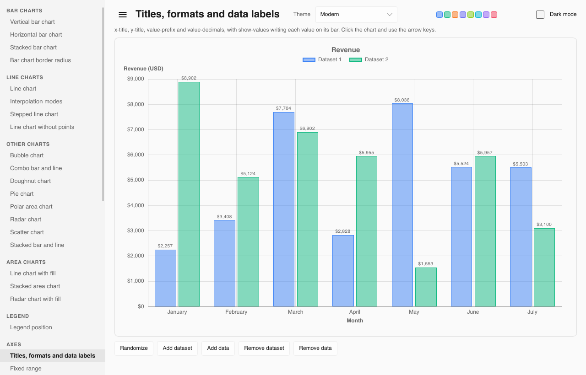
cargo install slintplot-gallery, or download it ready-built from the
releases page. See Example apps.Getting started
1. Add the dependencies
SlintPlot is used both as a regular dependency (the register! macro) and as a build dependency (to find its .slint files).
[dependencies]
slint = "1.18"
slintplot = "0.1"
[build-dependencies]
slint-build = "1.18"
slintplot = "0.1"2. Make the library importable: build.rs
fn main() {
let config = slint_build::CompilerConfiguration::new().with_library_paths(
std::collections::HashMap::from([("slintplot".into(), slintplot::library_path())]),
);
slint_build::compile_with_config("ui/app.slint", config).unwrap();
}3. Use a chart: ui/app.slint
import { ChartEngine, ChartLegendPosition, ChartSeriesType, LineChart } from "@slintplot";
export { ChartEngine } // required, so Rust can connect it
export component App inherits Window {
preferred-width: 800px;
preferred-height: 500px;
// Every property is listed here, most at its default value. Properties at
// their default value can be dropped: `LineChart { labels: ...; datasets: ...; }`
// is a complete chart.
LineChart {
// Data
labels: ["Jan", "Feb", "Mar", "Apr", "May", "Jun"];
datasets: [
{
label: "2025",
values: [12, 19, 8, 15, 22, 18],
points: [], // scatter and time series charts only
color: transparent, // transparent: the theme's next color
hidden: false,
fill: true, // default false
tension: 0.4, // default 0: straight lines
stepped: false,
series-type: ChartSeriesType.auto, // or .line / .bar in mixed charts
},
{ label: "2026", values: [15, 22, 13, 24, 26, 30], tension: 0.4 },
];
title: "Revenue"; // default ""
// Look
show-legend: true;
legend-position: ChartLegendPosition.top;
show-tooltip: true;
show-points: true;
show-values: false;
animated: true;
// Value axis
begin-at-zero: false;
stacked: false;
stacked-percent: false;
fixed-range: false;
min-value: 0;
max-value: 100;
logarithmic: false;
x-title: "";
y-title: "";
value-prefix: "";
value-suffix: "";
value-decimals: -1; // -1: automatic
// Large datasets, zoom and pan
decimate: true;
zoom-enabled: false;
view-start: 0;
view-end: 1;
min-view: 0.0005;
// Callbacks
category-clicked(index) => { debug("clicked category", index); }
legend-toggled(index) => { debug("toggled dataset", index); }
}
}Import only the charts you use, plus ChartEngine, which must always be imported and exported. Charts you don't
import cost nothing: Slint generates code only for the components your UI uses. register! connects the whole engine either way.
4. Connect the engine: src/main.rs
slint::include_modules!();
fn main() -> Result<(), slint::PlatformError> {
let app = App::new()?;
slintplot::register!(app);
app.run()
}software-renderer-path feature:
slint = { version = "1.18", features = ["software-renderer-path"] }.
How it works
Charts are Slint components. Geometry such as line paths, bar positions and axis ticks is computed in Rust by
the ChartEngine global's pure callbacks, which slintplot::register! connects.
Because the callbacks are pure, Slint recomputes them automatically when the chart's size, data or
theme changes.
- Data is a Slint model. Set it in
.slintor from Rust; changing a row updates the chart. - Colors are optional. Datasets and slices without a
colortake the next color of the active theme. - Two requirements: export
ChartEnginefrom your root.slintfile, and callslintplot::register!once after creating the component.
LineChart
Lines through the values of each dataset, one point per label.
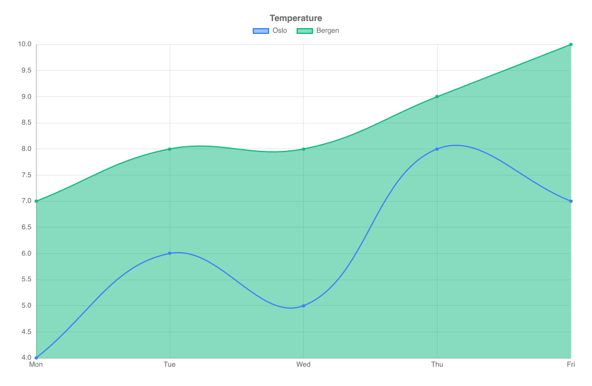
import { ChartLegendPosition, ChartTheme, LineChart } from "@slintplot";
LineChart {
title: "Temperature";
labels: ["Mon", "Tue", "Wed", "Thu", "Fri"];
datasets: [
{ label: "Oslo", values: [4, 6, 5, 8, 7], tension: 0.4 },
{ label: "Bergen", values: [7, 8, 8, 9, 10], tension: 0.4, fill: true },
];
// Look
show-legend: true;
legend-position: ChartLegendPosition.top;
show-tooltip: true;
show-values: false;
animated: true;
show-points: true;
fill-opacity: ChartTheme.fill-opacity; // fills of `fill: true` datasets
begin-at-zero: false;
stacked: false;
stacked-percent: false;
// Value axis
fixed-range: false;
min-value: 0;
max-value: 100;
logarithmic: false;
x-title: "";
y-title: "";
value-prefix: "";
value-suffix: "";
value-decimals: -1;
decimate: true;
// Zoom and pan
zoom-enabled: false;
view-start: 0;
view-end: 1;
min-view: 0.0005;
category-clicked(index) => { debug("clicked", index); }
legend-toggled(index) => { debug("toggled", index); }
}Dataset options that apply to lines: tension (0 for straight segments, about 0.4 for smooth curves),
fill (fill to the axis, or to the dataset below when stacked) and stepped (steps instead of slopes).
All properties are listed under Cartesian properties.
Stepped and stacked lines
LineChart {
labels: ["Q1", "Q2", "Q3", "Q4"];
stacked: true;
datasets: [
{ label: "Solar", values: [10, 25, 30, 12], fill: true },
{ label: "Wind", values: [20, 15, 18, 26], fill: true },
{ label: "Price", values: [5, 7, 6, 8], stepped: true },
];
}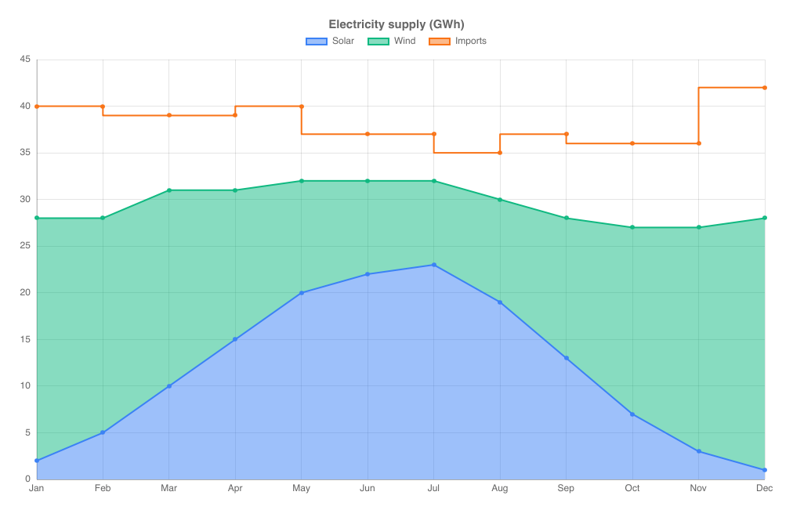
BarChart
Vertical bars, grouped by default and stacked with stacked: true. The value axis begins at zero.
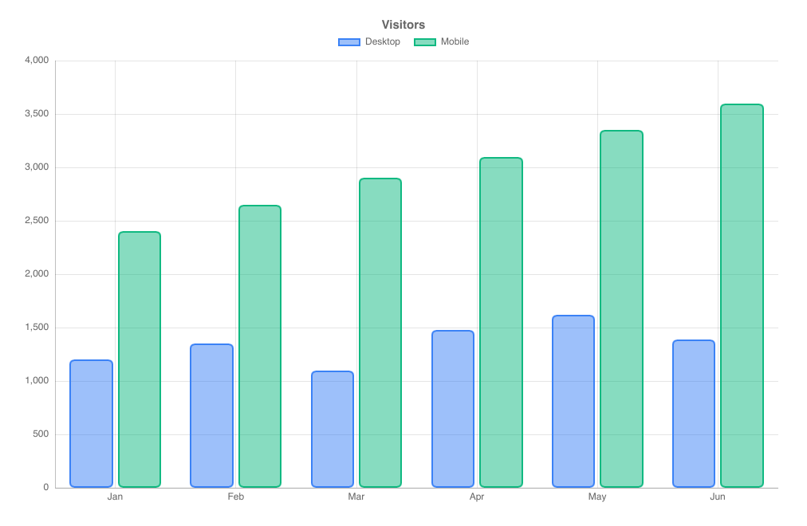
import { BarChart, ChartLegendPosition, ChartTheme } from "@slintplot";
BarChart {
title: "Visitors";
labels: ["Jan", "Feb", "Mar"];
datasets: [
{ label: "Desktop", values: [1200, 1350, 1100] },
{ label: "Mobile", values: [2400, 2650, 2900] },
];
// Look
show-legend: true;
legend-position: ChartLegendPosition.top;
show-tooltip: true;
show-values: false;
animated: true;
begin-at-zero: true;
stacked: false;
stacked-percent: false;
// Bars
bar-radius: 6px; // default 0
bar-border-width: 2px; // default 1px
fill-opacity: ChartTheme.fill-opacity; // 0.5 by default
// Value axis
fixed-range: false;
min-value: 0;
max-value: 100;
logarithmic: false;
x-title: "";
y-title: "";
value-prefix: "";
value-suffix: "";
value-decimals: -1;
// Zoom and pan
zoom-enabled: false;
view-start: 0;
view-end: 1;
min-view: 0.0005;
category-clicked(index) => { debug("clicked", index); }
legend-toggled(index) => { debug("toggled", index); }
}When stacked, positive and negative values stack separately.
HorizontalBarChart
Categories run down the left side and bars grow to the right.
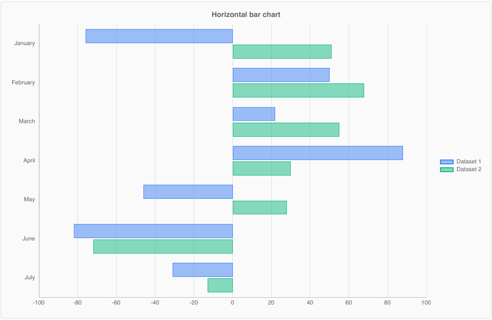
import { ChartLegendPosition, ChartTheme, HorizontalBarChart } from "@slintplot";
HorizontalBarChart {
title: "Languages used (%)";
labels: ["JavaScript", "Python", "Rust"];
datasets: [
{ label: "2025", values: [62, 51, 12] },
{ label: "2026", values: [60, 55, 15] },
];
show-legend: true;
legend-position: ChartLegendPosition.right; // default top
show-tooltip: true;
show-values: false;
animated: true;
begin-at-zero: true;
stacked: false;
stacked-percent: false;
// Bars
bar-radius: 0;
bar-border-width: 1px;
fill-opacity: ChartTheme.fill-opacity; // 0.5 by default
// Value axis
fixed-range: false;
min-value: 0;
max-value: 100;
logarithmic: false;
x-title: "";
y-title: "";
value-prefix: "";
value-suffix: "";
value-decimals: -1;
category-clicked(index) => { debug("clicked", index); }
legend-toggled(index) => { debug("toggled", index); }
}| Property | Type | Default | Description |
|---|---|---|---|
datasets, labels, title | As for cartesian charts | ||
begin-at-zero | bool | true | Include 0 in the value axis |
stacked | bool | false | Stack the datasets end to end |
show-legend, legend-position, show-tooltip, animated | As for cartesian charts | ||
bar-radius, bar-border-width | length | 0, 1px | Rounded bars and their outline |
stacked-percent, show-values, fill-opacity | As for cartesian charts | ||
x-title, y-title, fixed-range, min-value, max-value, logarithmic, value formatting | See Axes and formatting; the value axis is the x axis | ||
hovered-index out | int | The category under the mouse or selected with the arrow keys, or -1 | |
category-clicked(index), legend-toggled(index) | callbacks |
ScatterChart
Points on numeric x and y axes. Datasets use points instead of values.
Hovering highlights the nearest point and shows its coordinates.
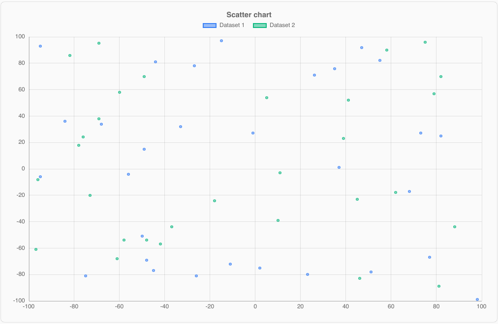
import { ChartLegendPosition, ScatterChart } from "@slintplot";
ScatterChart {
title: "Height and weight";
datasets: [{
label: "Group A",
points: [{ x: 165, y: 58 }, { x: 172, y: 70 }, { x: 180, y: 82 }],
}];
// Look
show-legend: true;
legend-position: ChartLegendPosition.top;
show-tooltip: true;
show-values: false;
animated: true;
show-points: true;
show-lines: false; // connect the points in order
begin-at-zero: false;
// Value axis
fixed-range: false;
min-value: 0;
max-value: 100;
logarithmic: false;
x-title: "";
y-title: "";
value-prefix: "";
value-suffix: "";
value-decimals: -1;
time-axis: false; // see TimeSeriesChart
decimate: true;
// Zoom and pan
zoom-enabled: true; // default false
view-start: 0;
view-end: 1;
min-view: 0.0005;
point-clicked(dataset, index) => {
debug("clicked point", index, "of dataset", dataset);
}
legend-toggled(index) => { debug("toggled", index); }
}BubbleChart
A scatter chart whose points have a radius: r is the bubble radius in pixels. Hovering works anywhere inside a bubble.
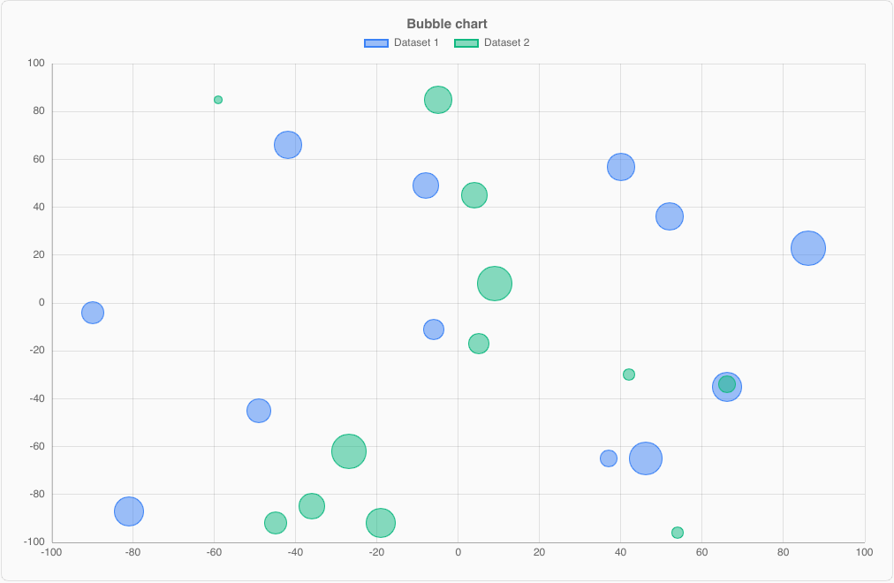
import { BubbleChart, ChartLegendPosition } from "@slintplot";
BubbleChart {
title: "Markets";
datasets: [{
label: "Retail",
// r: the bubble radius in pixels
points: [{ x: 20, y: 30, r: 15 }, { x: 40, y: 10, r: 8 }, { x: 70, y: 45, r: 20 }],
}];
// Look
show-legend: true;
legend-position: ChartLegendPosition.top;
show-tooltip: true;
show-values: false;
animated: true;
begin-at-zero: false;
// Value axis
fixed-range: false;
min-value: 0;
max-value: 100;
logarithmic: false;
x-title: "";
y-title: "";
value-prefix: "";
value-suffix: "";
value-decimals: -1;
// Zoom and pan
zoom-enabled: false;
view-start: 0;
view-end: 1;
min-view: 0.0005;
point-clicked(dataset, index) => { debug("clicked", dataset, index); }
legend-toggled(index) => { debug("toggled", index); }
}PieChart
Slices proportional to their values. The hovered slice moves outwards, and the tooltip shows its value and share. Clicking a legend entry hides the slice.
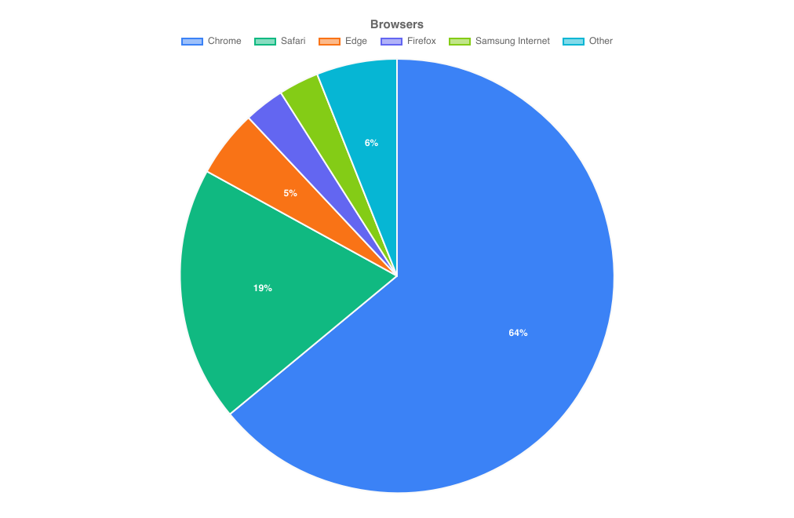
import { ChartLegendPosition, PieChart } from "@slintplot";
PieChart {
title: "Browsers";
slices: [
{ label: "Chrome", value: 64 },
{ label: "Safari", value: 19 },
{ label: "Edge", value: 5 },
{ label: "Other", value: 12, color: transparent, hidden: false },
];
cutout: 0;
polar: false; // the size of the center hole
show-legend: true;
legend-position: ChartLegendPosition.top;
show-tooltip: true;
animated: true;
show-values: false;
show-percentages: false;
value-prefix: "";
value-suffix: "";
value-decimals: -1;
slice-clicked(index) => { debug("clicked slice", index); }
legend-toggled(index) => { debug("toggled slice", index); }
}| Property | Type | Default | Description |
|---|---|---|---|
slices in-out | [ChartSlice] | { label, value, color, hidden }. Non-positive values are skipped. | |
title | string | "" | Shown above the chart |
cutout | float | 0 | Size of the center hole, as a fraction of the radius |
show-legend | bool | true | |
legend-position | ChartLegendPosition | top | |
show-tooltip | bool | true | |
animated | bool | true | Sweep the slices in when the chart appears |
show-values, show-percentages | bool | false | Write each slice's value, or its share, on it |
value-prefix, value-suffix, value-decimals | How values are written | ||
hovered-index out | int | The slice under the mouse or selected with the keyboard, or -1 | |
slice-clicked(index) | callback | A slice was clicked | |
legend-toggled(index) | callback | A legend entry was clicked; the slice's hidden flag has already been toggled |
DoughnutChart
A PieChart with cutout: 0.5. It has the same properties.
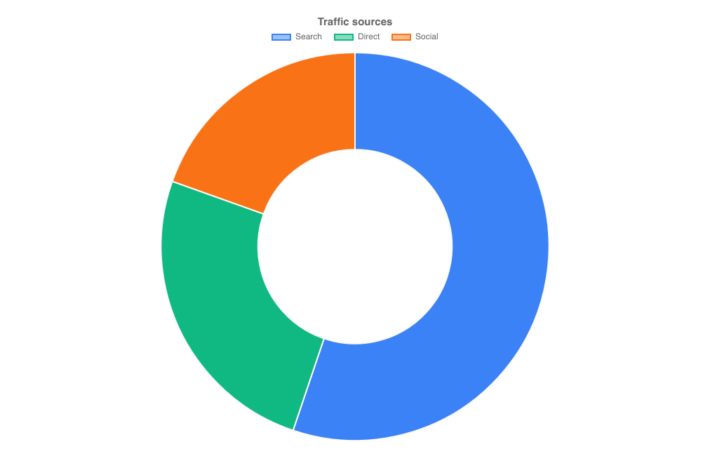
import { ChartLegendPosition, DoughnutChart } from "@slintplot";
DoughnutChart {
title: "Traffic sources";
slices: [
{ label: "Search", value: 48 },
{ label: "Direct", value: 22 },
{ label: "Social", value: 17 },
];
cutout: 0.5;
polar: false; // the doughnut's default
show-legend: true;
legend-position: ChartLegendPosition.top;
show-tooltip: true;
animated: true;
show-values: false;
show-percentages: false;
value-prefix: "";
value-suffix: "";
value-decimals: -1;
slice-clicked(index) => { debug("clicked slice", index); }
legend-toggled(index) => { debug("toggled slice", index); }
}PolarAreaChart
Slices of equal angle whose radius shows the value, with labelled value rings. It has the same properties as PieChart.
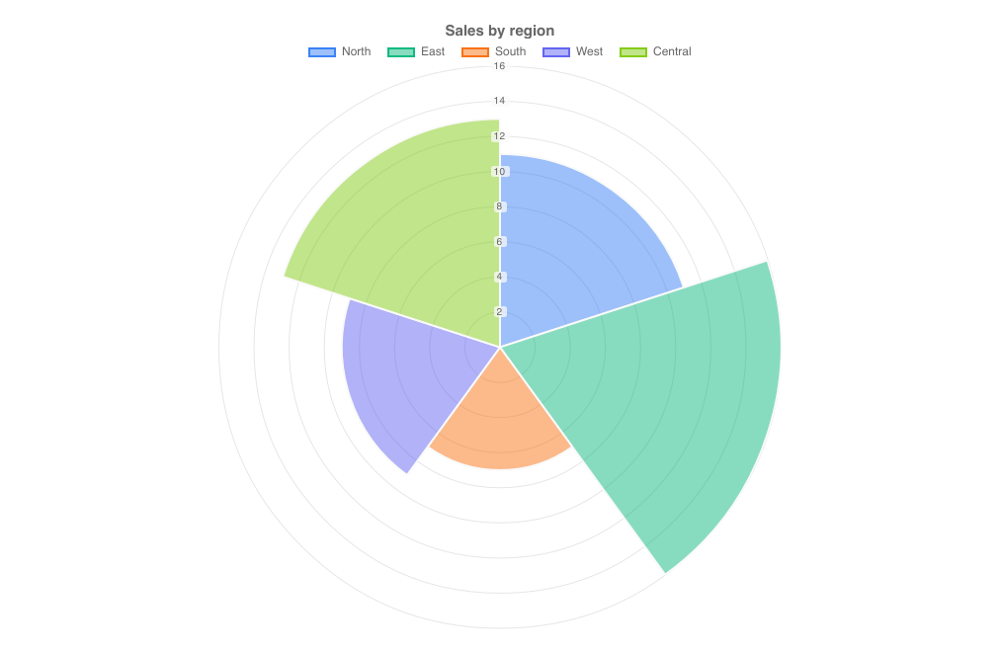
import { ChartLegendPosition, PolarAreaChart } from "@slintplot";
PolarAreaChart {
title: "Sales by region";
slices: [
{ label: "North", value: 11 },
{ label: "East", value: 16 },
{ label: "South", value: 7 },
{ label: "West", value: 3 },
];
cutout: 0;
polar: true; // set by PolarAreaChart
show-legend: true;
legend-position: ChartLegendPosition.top;
show-tooltip: true;
animated: true;
show-values: false;
show-percentages: false;
value-prefix: "";
value-suffix: "";
value-decimals: -1;
slice-clicked(index) => { debug("clicked slice", index); }
legend-toggled(index) => { debug("toggled slice", index); }
}RadarChart
One spoke per label and one closed polygon per dataset. Hovering a spoke shows every dataset's value for it.
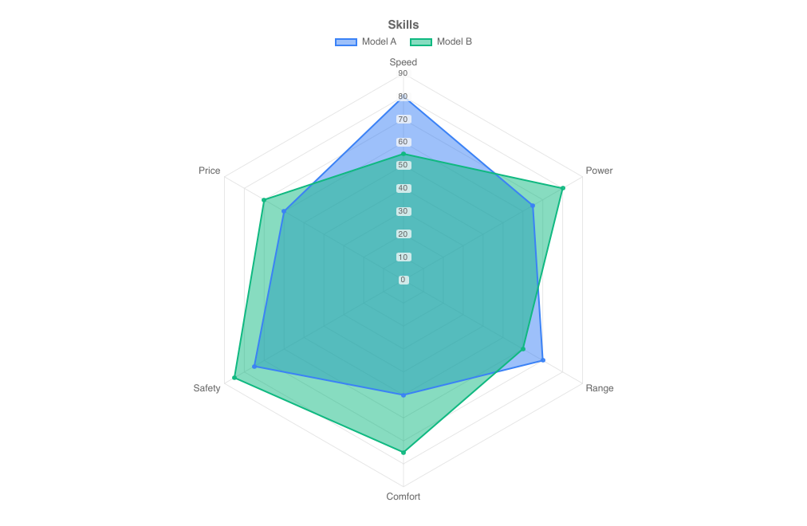
import { ChartLegendPosition, RadarChart } from "@slintplot";
RadarChart {
title: "Skills";
labels: ["Speed", "Power", "Range", "Comfort", "Price"];
datasets: [
{ label: "Model A", values: [80, 65, 70, 50, 60], fill: true },
{ label: "Model B", values: [55, 80, 60, 75, 70], fill: true },
];
begin-at-zero: true;
show-legend: true;
legend-position: ChartLegendPosition.top;
show-tooltip: true;
show-points: true;
animated: true;
value-prefix: "";
value-suffix: "";
value-decimals: -1;
category-clicked(index) => { debug("clicked spoke", index); }
legend-toggled(index) => { debug("toggled", index); }
}| Property | Type | Default | Description |
|---|---|---|---|
datasets in-out | [ChartDataset] | Uses label, values, color, hidden and fill. Needs at least three labels. | |
labels | [string] | One spoke per label | |
title | string | "" | |
begin-at-zero | bool | true | The center is 0 |
show-legend, legend-position, show-tooltip, animated, value formatting | As for other charts | ||
show-points | bool | true | Markers on the polygon corners |
hovered-index out | int | The spoke under the mouse or selected with the keyboard, or -1 | |
category-clicked(index), legend-toggled(index) | callbacks |
Mixed charts
Any dataset in a line or bar chart can be drawn as the other type with series-type. Lines in a bar chart go through the bar centers, and stacking keeps lines and bars apart.
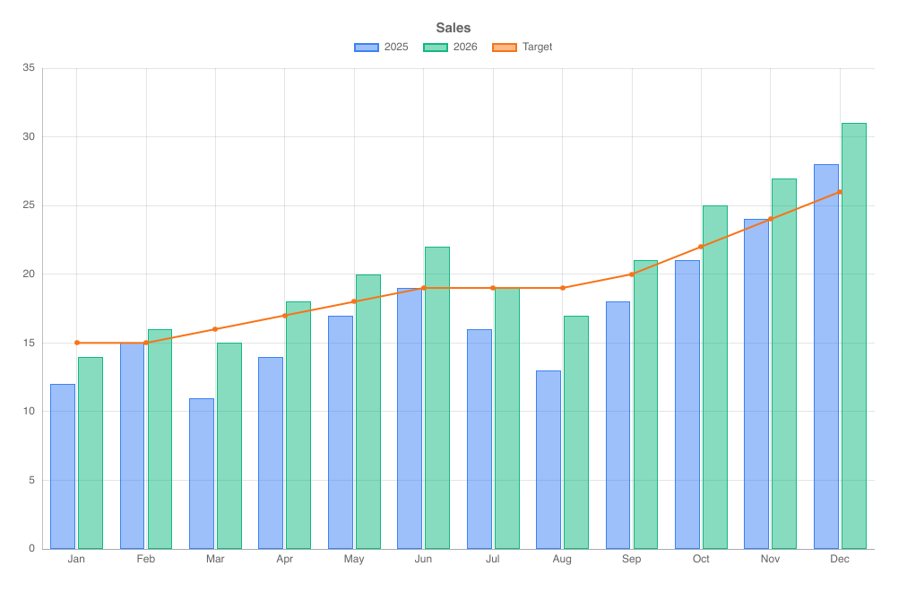
This example sets only the properties for this feature; the chart sections above list all of them.
import { BarChart, ChartSeriesType } from "@slintplot";
BarChart {
labels: ["Q1", "Q2", "Q3", "Q4"];
datasets: [
{ label: "Sales", values: [12, 19, 8, 15] },
{ label: "Average", values: [10, 14, 12, 13], series-type: ChartSeriesType.line },
];
}100% stacked bars
With stacked-percent: true, each category of a BarChart or HorizontalBarChart is split into the
datasets' shares, so every bar fills the axis from 0% to 100%. Labels and tooltips show the percentages. This is the classic chart for
survey answers. The percentage labels use largest remainder rounding, so each bar's labels add up to exactly 100%.
Answers with a natural order, from "Every day" to "Never", read best in shades of one color, as in the screenshot and the example
below: a fade from dark blue to light blue. Give each dataset its own color, which always wins over the theme; without one,
the datasets take the theme's colors.
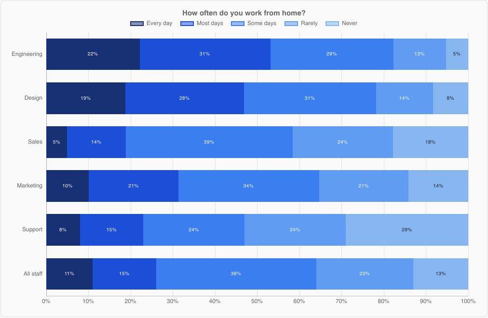
This example sets only the properties for this feature; the chart sections above list all of them.
HorizontalBarChart {
title: "How often do you work from home?";
labels: ["Engineering", "Sales", "Support"];
stacked-percent: true;
show-values: true;
fill-opacity: 1;
bar-border-width: 0;
datasets: [
{ label: "Every day", values: [24, 5, 8], color: #172f73 },
{ label: "Most days", values: [30, 12, 14], color: #1d4ed8 },
{ label: "Some days", values: [28, 34, 23], color: #3b7ef0 },
{ label: "Rarely", values: [12, 28, 25], color: #5f9cf2 },
{ label: "Never", values: [6, 21, 30], color: #86b6ef },
];
}TimeSeriesChart
Lines over a time axis. Datasets use points, whose x is the number of seconds after time-origin.
The axis picks round times for its ticks: seconds, minutes, hours, days, months or years, depending on the visible range, and the
tooltip shows the date and time. Hovering anywhere above or below the lines shows the values at that time. Tick steps follow the visible span, from years down to seconds. When no tick falls on a midnight (or on a January), the first
tick also shows the date (or the year), so a zoomed-in axis always says when it is. Zoomed in between points, lines continue to the
edges of the plot.
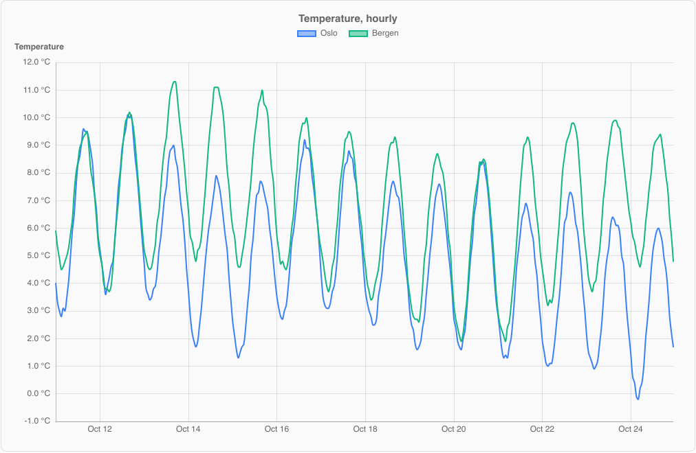
import { ChartLegendPosition, TimeSeriesChart } from "@slintplot";
TimeSeriesChart {
title: "Temperature";
datasets: [{
label: "Oslo",
// One point per hour: x is seconds after the time origin.
points: [{ x: 0, y: 8.5 }, { x: 3600, y: 9.1 }, { x: 7200, y: 10.4 }],
}];
time-origin: { year: 2026, month: 10, day: 11 }; // default 1970-01-01
time-axis: true; // set by TimeSeriesChart
utc-offset: 0; // minutes added to UTC
show-lines: true;
show-points: false;
// Look
show-legend: true;
legend-position: ChartLegendPosition.top;
show-tooltip: true;
show-values: false;
animated: true;
begin-at-zero: false;
// Value axis
fixed-range: false;
min-value: 0;
max-value: 100;
logarithmic: false;
x-title: "";
y-title: "";
value-prefix: "";
value-suffix: " °C"; // default ""
value-decimals: -1;
decimate: true;
// Zoom and pan
zoom-enabled: true; // default false
view-start: 0;
view-end: 1;
min-view: 0.0005;
point-clicked(dataset, index) => { debug("clicked", dataset, index); }
legend-toggled(index) => { debug("toggled", index); }
}| Property | Type | Default | Description |
|---|---|---|---|
time-origin | ChartDateTime | 1970-01-01 | The time of x: 0 (UTC) |
utc-offset | int | 0 | Minutes added to UTC for the displayed times, such as 120 |
show-points | bool | false | Markers on the points |
All cartesian properties apply as well, including decimate and zoom-enabled.
ScatterChart has the same time-axis, time-origin and show-lines properties.
x values are 32-bit floats: measured from a nearby origin, they stay exact to the second for about half a year.
HeatmapChart
A matrix of colored cells: rows (y-labels) by columns (x-labels), with values in row order.
Missing values (NaN) are drawn as empty cells.
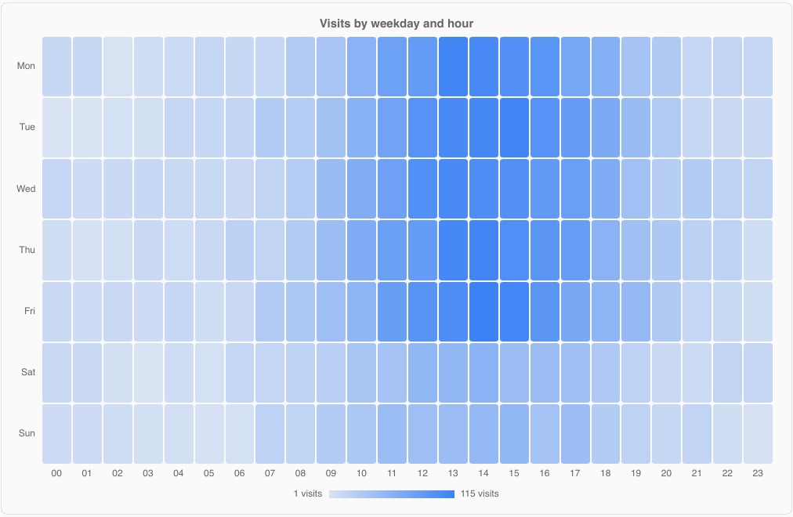
import { ChartTheme, HeatmapChart } from "@slintplot";
HeatmapChart {
title: "Visits by weekday and hour";
x-labels: ["09", "10", "11", "12"];
y-labels: ["Mon", "Tue"];
// values[row * columns + column]
values: [12, 30, 45, 52,
10, 28, 49, 60];
color: ChartTheme.colors[0];
diverging: false;
center-value: 0;
negative-color: ChartTheme.colors[2];
fixed-range: false;
min-value: 0;
max-value: 100;
show-values: false;
show-legend: true;
show-tooltip: true;
cell-gap: 2px;
cell-radius: 3px;
value-prefix: "";
value-suffix: " visits"; // default ""
value-decimals: -1;
cell-clicked(row, column) => { debug("clicked", row, column); }
}A diverging scale suits values around a center, such as correlations:
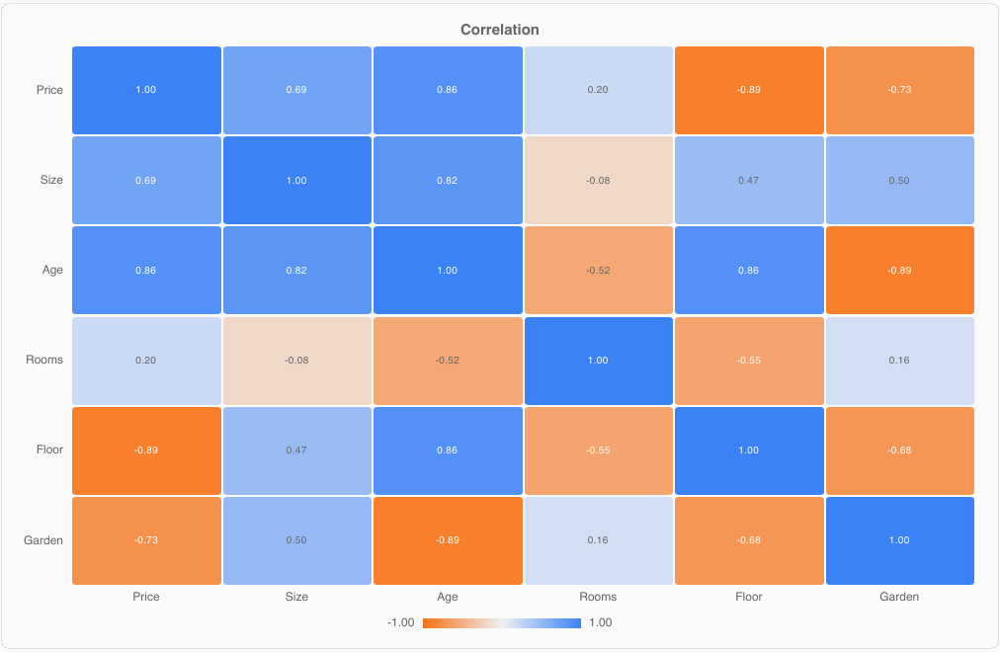
| Property | Type | Default | Description |
|---|---|---|---|
x-labels, y-labels | [string] | Column and row labels | |
values | [float] | values[row * columns + column]; NaN for missing | |
color | color | palette slot 1 | The color of the largest value |
diverging, center-value, negative-color | bool, float, color | false, 0, palette slot 3 | Values below the center use negative-color |
fixed-range, min-value, max-value | fit the data | A fixed color range | |
show-values | bool | false | Write the value in each cell |
cell-gap, cell-radius | length | 2px, 3px | |
show-legend, show-tooltip, title, value formatting | As for other charts | ||
hovered-row, hovered-column out | int | The cell under the mouse, or -1 | |
cell-clicked(row, column) | callback |
CalendarHeatmap
A year (or any span) of daily values, like GitHub's contribution graph: one column per week, one row per weekday, with month and
weekday labels and a "Less … More" legend. Days are colored in levels steps, split by quantiles of the positive values,
so a few very active days don't wash out the rest; zero or missing days are empty. The days take the theme's first color, in
lighter shades for fewer contributions; set color for another, such as GitHub's green.
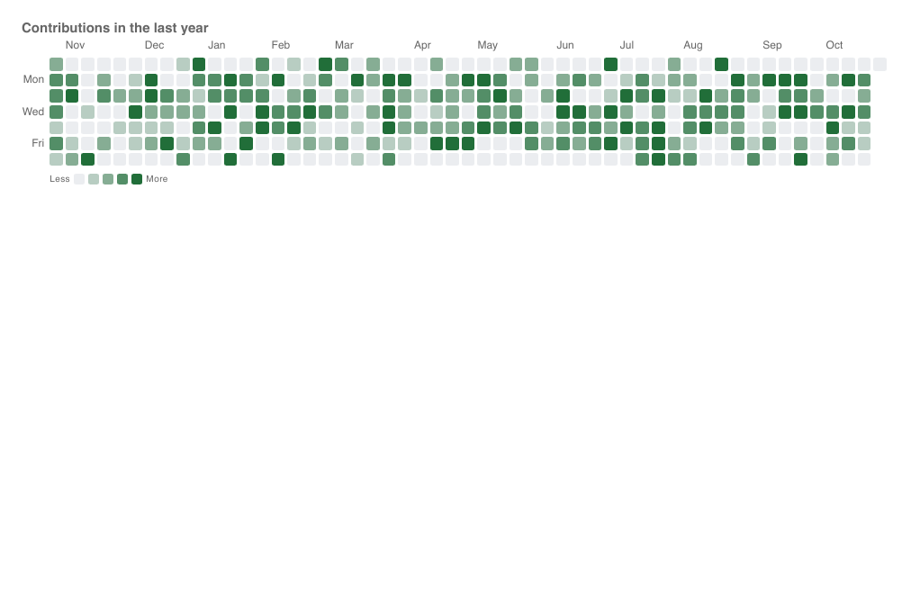
import { CalendarHeatmap, ChartTheme } from "@slintplot";
CalendarHeatmap {
title: "Contributions in the last year";
start-date: { year: 2025, month: 10, day: 26 };
values: root.daily-counts; // one value per day
color: ChartTheme.dark ? #39d353 : #216e39; // GitHub's green; default ChartTheme.colors[0]
levels: 4;
week-starts-monday: false;
show-legend: true;
show-tooltip: true;
cell-gap: 3px;
cell-radius: 2px;
value-prefix: "";
value-suffix: " contributions"; // default ""
value-decimals: -1;
day-clicked(index) => { debug("day", index); }
}| Property | Type | Default | Description |
|---|---|---|---|
start-date | ChartDateTime | The date of the first value | |
values | [float] | One value per day | |
color | color | ChartTheme.colors[0] | The color of the most active days; fewer contributions are lighter shades of it |
levels | int | 4 | Color steps besides "empty" |
week-starts-monday | bool | false | Weeks start on Sunday, like GitHub, unless set |
cell-gap, cell-radius | length | 3px, 2px | |
show-legend, show-tooltip, title, value formatting | |||
hovered-index out | int | The day under the mouse or selected with the keyboard, or -1 | |
day-clicked(index) | callback |
TreemapChart
One rectangle per item, with an area proportional to its value, laid out with the squarified algorithm so the rectangles stay
close to square. Items with the same group are placed together under the group's label and share the group's color;
the legend lists the groups, and clicking one hides it. Without groups, every item gets its own theme color and there is no legend.
Missing, zero and negative values take no space. Labels and values are written in the rectangles where they fit, in white or dark
text depending on the fill.
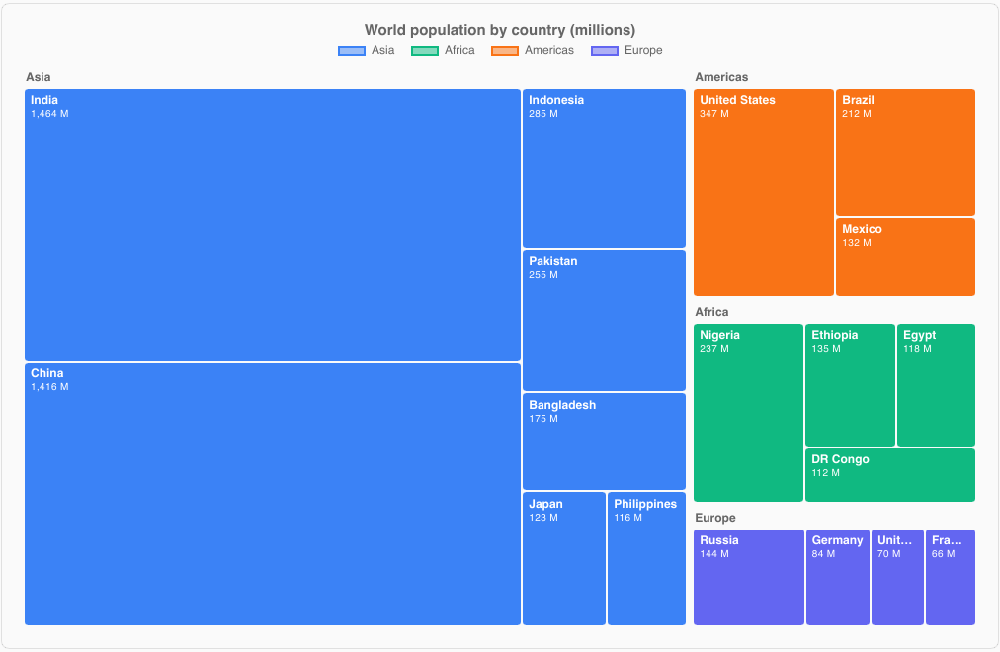
import { ChartLegendPosition, TreemapChart } from "@slintplot";
TreemapChart {
title: "World population (millions)";
items: [
{ label: "India", value: 1464, group: "Asia" },
{ label: "China", value: 1416, group: "Asia" },
{ label: "Nigeria", value: 237, group: "Africa" },
{ label: "United States", value: 347, group: "Americas" },
{ label: "Brazil", value: 212, group: "Americas", color: transparent }, // transparent: the group's color
];
show-legend: true;
legend-position: ChartLegendPosition.top;
show-tooltip: true;
show-values: true;
cell-gap: 2px;
cell-radius: 3px;
value-prefix: "";
value-suffix: " M"; // default ""
value-decimals: -1;
item-clicked(index) => { debug("clicked", index); }
legend-toggled(index) => { debug("toggled group", index); }
}| Property | Type | Default | Description |
|---|---|---|---|
items | [ChartTreemapItem] | { label, value, group, color } | |
show-values | bool | true | Write each value under its label, where there is room |
cell-gap, cell-radius | length | 2px, 3px | Groups are three gaps apart |
show-legend, legend-position, show-tooltip, title, value formatting | As for the other charts | ||
hovered-index out | int | The item under the mouse or selected with the keyboard, or -1 | |
item-clicked(index) | callback | The index of the clicked item in items | |
legend-toggled(index) | callback | A group was hidden or shown |
SunburstChart
A hierarchy drawn as rings: the top level innermost, and each item's angle its share of its parent. Items name their parent by
index, and a parent must come before its children; an item whose parent is -1 (or invalid) is top-level. Leave a parent's
value at 0 and it is the sum of its children; a parent with a larger value of its own keeps the rest of its angle empty.
Top-level items take the theme's colors in order and their children a lighter shade of their parent's. Clicking an item with
children zooms into it, so that it fills the rings; clicking the center zooms back out. The center shows the total of what is shown.
Labels are written on the arcs where they fit, and the legend lists the top-level items.
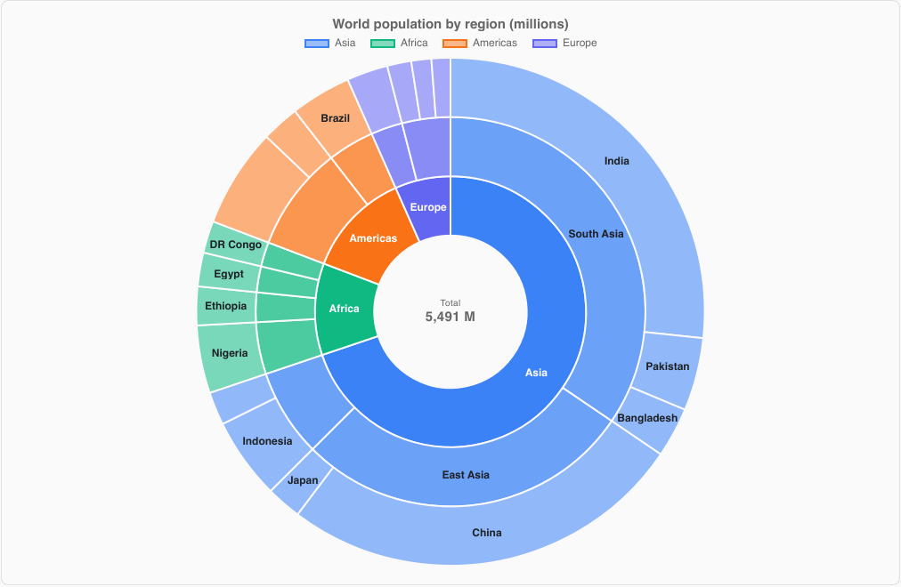
import { ChartLegendPosition, SunburstChart } from "@slintplot";
SunburstChart {
title: "World population (millions)";
items: [
{ label: "Asia", parent: -1 }, // 0: its value is the sum of its children
{ label: "South Asia", parent: 0 }, // 1
{ label: "India", value: 1464, parent: 1 },
{ label: "Pakistan", value: 255, parent: 1 },
{ label: "East Asia", parent: 0 }, // 4
{ label: "China", value: 1416, parent: 4 },
{ label: "Europe", parent: -1, color: transparent }, // 6; transparent: the theme's next color
{ label: "Germany", value: 84, parent: 6 },
{ label: "France", value: 66, parent: 6, hidden: false },
];
show-legend: true;
legend-position: ChartLegendPosition.top;
show-tooltip: true;
animated: true;
show-labels: true;
cutout: 0.3;
center-label: "Total";
zoom-item: -1;
value-prefix: "";
value-suffix: " M"; // default ""
value-decimals: -1;
item-clicked(index) => { debug("clicked", index); }
zoomed(index) => { debug("zoomed into", index); }
legend-toggled(index) => { debug("toggled", index); }
}| Property | Type | Default | Description |
|---|---|---|---|
items in-out | [ChartSunburstItem] | { label, value, parent, color, hidden } | |
show-labels | bool | true | Write each item's label on its arc, where it fits |
cutout | float | 0.3 | Size of the center circle, as a share of the radius |
center-label | string | "Total" | Shown above the total when not zoomed in |
zoom-item in-out | int | -1 | The zoomed-in item, or -1 for all; set it to zoom from code |
animated | bool | true | Sweep the rings in when the chart appears |
show-legend, legend-position, show-tooltip, title, value formatting | As for the other charts | ||
hovered-index out | int | The item under the mouse or selected with the keyboard, or -1 | |
item-clicked(index) | callback | The index of the clicked item in items | |
zoomed(index) | callback | The chart zoomed into index, or out to -1 | |
legend-toggled(index) | callback | A top-level item was hidden or shown; index counts the legend entries |
FunnelChart
The stages as slices of one funnel: each slice is as wide at the top as its value and narrows to the next stage, with curved sides.
Stages fade from color at the top to lighter shades below (darker in dark mode), so the order reads in the color; a
stage's own color wins. Each slice shows its value and its share of the first stage, beside the slice when it is too
narrow, and badges on the right show the share of the previous stage each one kept. Hovering a stage fades the others. With so many stages that the
rows are too short for text, the names, values and badges are left out, and the tooltip shows them. Stages are
ChartSlices, as in pie charts.
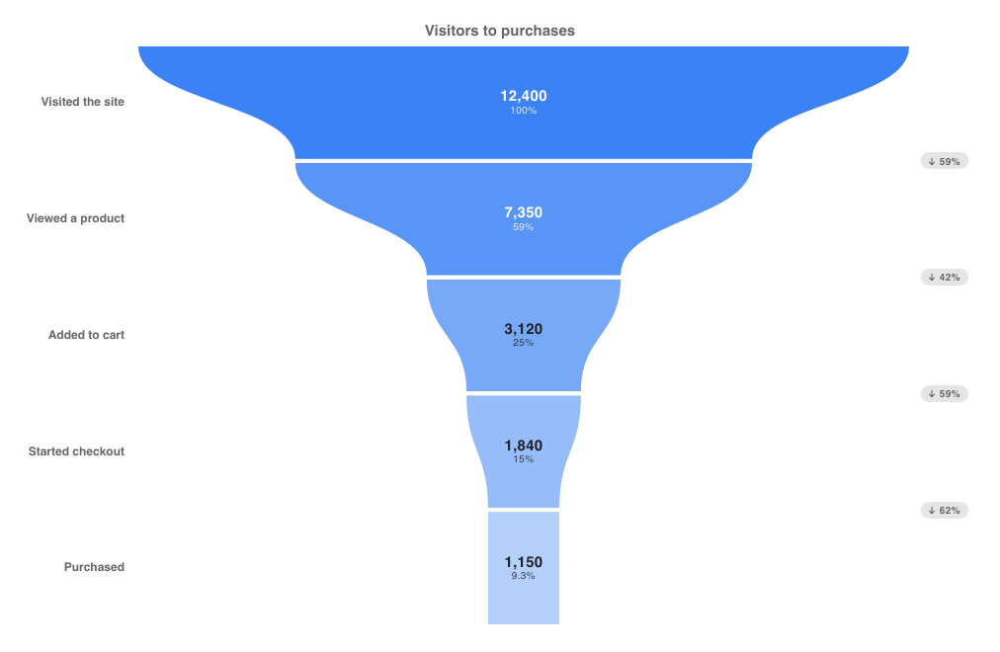
import { ChartLegendPosition, ChartTheme, FunnelChart } from "@slintplot";
FunnelChart {
title: "Visitors to purchases";
stages: [
{ label: "Visited the site", value: 12400 },
{ label: "Viewed a product", value: 7350 },
{ label: "Added to cart", value: 3120 },
{ label: "Purchased", value: 1150, color: transparent, hidden: false }, // transparent: the fade
];
show-legend: false;
legend-position: ChartLegendPosition.top;
show-tooltip: true;
animated: true;
show-labels: true;
show-values: true;
show-percentages: true;
show-conversions: true;
color: ChartTheme.colors[0];
curved: true;
gap: 4px;
value-prefix: "";
value-suffix: "";
value-decimals: -1;
stage-clicked(index) => { debug("clicked", index); }
legend-toggled(index) => { debug("toggled", index); }
}| Property | Type | Default | Description |
|---|---|---|---|
stages in-out | [ChartSlice] | { label, value, color, hidden }, from the first stage to the last | |
show-labels | bool | true | The stage names on the left |
show-values, show-percentages | bool | true, true | The value, and the share of the first stage, on each slice |
show-conversions | bool | true | Badges with the share of the previous stage kept |
color | color | ChartTheme.colors[0] | The first stage's color; the others fade from it |
curved | bool | true | Curved sides between the stages, or straight ones |
gap | length | 4px | Space between the slices |
show-legend | bool | false | The names are on the left already; the legend can hide stages |
legend-position, show-tooltip, animated, title, value formatting | As for the other charts; the stages open out one after the other | ||
hovered-index out | int | The stage under the mouse or selected with the keyboard, or -1 | |
stage-clicked(index), legend-toggled(index) | callbacks |
WaterfallChart
Each step's bar floats from the running total before it to the total after it: green when it adds, red when it takes away.
Steps with total: true are bars from zero to the running total, in the theme's first color, and their value is
ignored. Thin lines connect each bar's end to the next bar. The value axis always includes zero; the tooltip shows the change and
the running total. Negative values are written with the sign before the prefix: "-$48k".
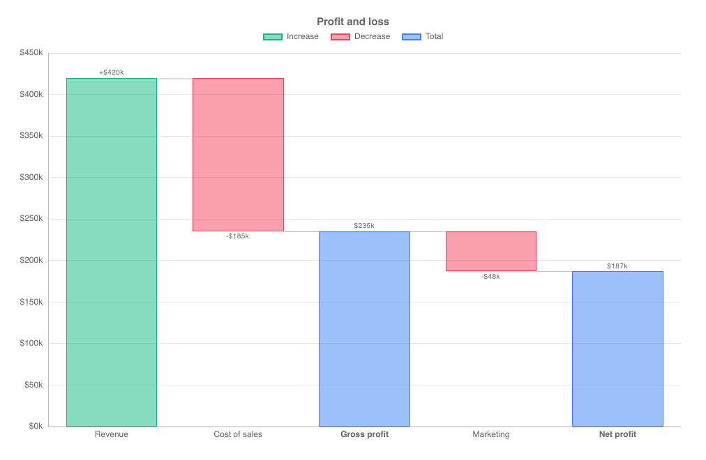
import { ChartLegendPosition, ChartTheme, WaterfallChart } from "@slintplot";
WaterfallChart {
title: "Profit and loss";
steps: [
{ label: "Revenue", value: 420 },
{ label: "Cost of sales", value: -185 },
{ label: "Gross profit", total: true },
{ label: "Marketing", value: -48 },
{ label: "Net profit", total: true },
];
show-legend: true;
legend-position: ChartLegendPosition.top;
show-tooltip: true;
animated: true;
show-values: true; // default false
show-connectors: true;
increase-color: #10b981; // default: green, lighter in dark mode
decrease-color: #f43f5e; // default: red, lighter in dark mode
total-color: ChartTheme.colors[0];
increase-label: "Increase";
decrease-label: "Decrease";
total-label: "Total";
bar-radius: 0;
bar-border-width: 1px;
fill-opacity: 0.5; // default ChartTheme.fill-opacity
x-title: "";
y-title: "";
value-prefix: "$"; // default ""
value-suffix: "k"; // default ""
value-decimals: -1;
step-clicked(index) => { debug("clicked", index); }
}| Property | Type | Default | Description |
|---|---|---|---|
steps | [ChartWaterfallStep] | { label, value, total } | |
show-values | bool | false | Write each change (with its sign) or total by its bar |
show-connectors | bool | true | Lines from each bar's end to the next bar |
increase-color, decrease-color, total-color | color | green, red, first theme color | |
increase-label, decrease-label, total-label | string | "Increase", "Decrease", "Total" | The legend entries |
bar-radius, bar-border-width, fill-opacity, x-title, y-title | As for bar charts | ||
show-legend, legend-position, show-tooltip, animated, title, value formatting | As for the other charts | ||
hovered-index out | int | The step under the mouse or selected with the keyboard, or -1 | |
step-clicked(index) | callback |
DumbbellChart
One row per category, with a dot for each dataset's value and a bar joining the smallest to the largest: a compact way to compare
two values per category, such as before and after. It takes labels and datasets like a horizontal bar chart,
and works with more than two datasets too. With exactly two, the tooltip also shows the change from the first to the second.
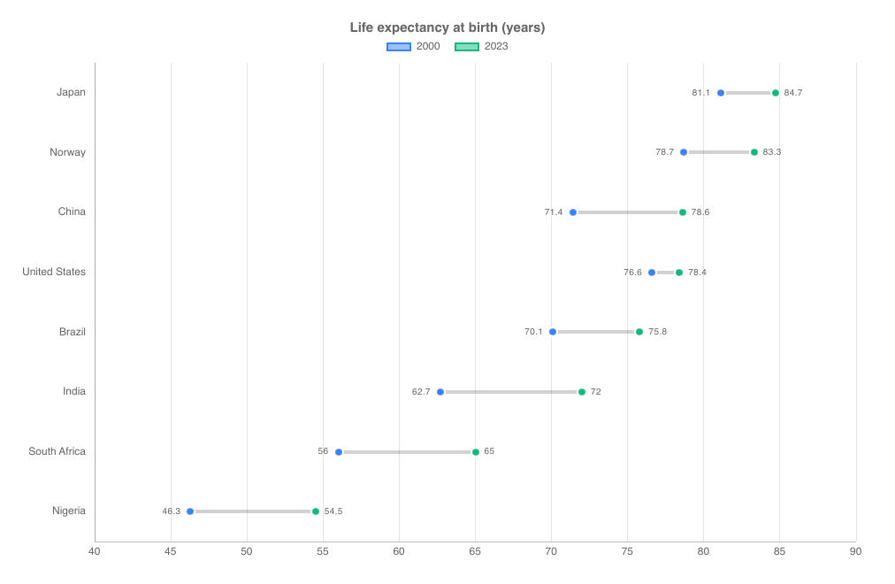
import { ChartLegendPosition, DumbbellChart } from "@slintplot";
DumbbellChart {
title: "Life expectancy at birth (years)";
labels: ["Japan", "India", "Nigeria"];
datasets: [
{ label: "2000", values: [81.1, 62.7, 46.3] },
{ label: "2023", values: [84.7, 72.0, 54.5] },
];
show-legend: true;
legend-position: ChartLegendPosition.top;
show-tooltip: true;
animated: true;
begin-at-zero: false;
show-values: true; // default false
dot-radius: 6px;
bar-width: 4px;
bar-color: gray; // default: between the grid and axis colors
fixed-range: false;
min-value: 0;
max-value: 100;
logarithmic: false;
x-title: "";
y-title: "";
value-prefix: "";
value-suffix: "";
value-decimals: -1;
category-clicked(index) => { debug("clicked", index); }
legend-toggled(index) => { debug("toggled", index); }
}| Property | Type | Default | Description |
|---|---|---|---|
labels | [string] | One row per label | |
datasets in-out | [ChartDataset] | One dot per dataset and row, from values | |
show-values | bool | false | Write the smallest value left of its dot and the largest right of it |
dot-radius, bar-width, bar-color | 6px, 4px, gray | ||
begin-at-zero, fixed-range, min-value, max-value, logarithmic, x-title, y-title | As for cartesian charts; the value axis is horizontal | ||
show-legend, legend-position, show-tooltip, animated, title, value formatting | As for the other charts | ||
hovered-index out | int | The row under the mouse or selected with the keyboard, or -1 | |
category-clicked(index), legend-toggled(index) | callbacks |
GaugeChart
An arc from min-value to max-value, centered at the top and covering sweep degrees, in one of two
styles after common dashboard gauges:
- Fill (the default), like ApexCharts radial bars and Highcharts solid gauges: a thick track with rounded ends,
filled up to
value, with the value large in the middle and the minimum and maximum at the ends.bandsare drawn as a thin ring outside the track, like Grafana's threshold markers, and the fill takes the color of the band the value is in. - Needle (
show-needle: true), like ECharts gauges: the bands as a thinner arc, with major and minor ticks and their labels inside it, and a needle pointing at the value, which is written below the hub.
The value is sized to the gauge, and the gauge moves smoothly to new values. Hovering a band shows its range.
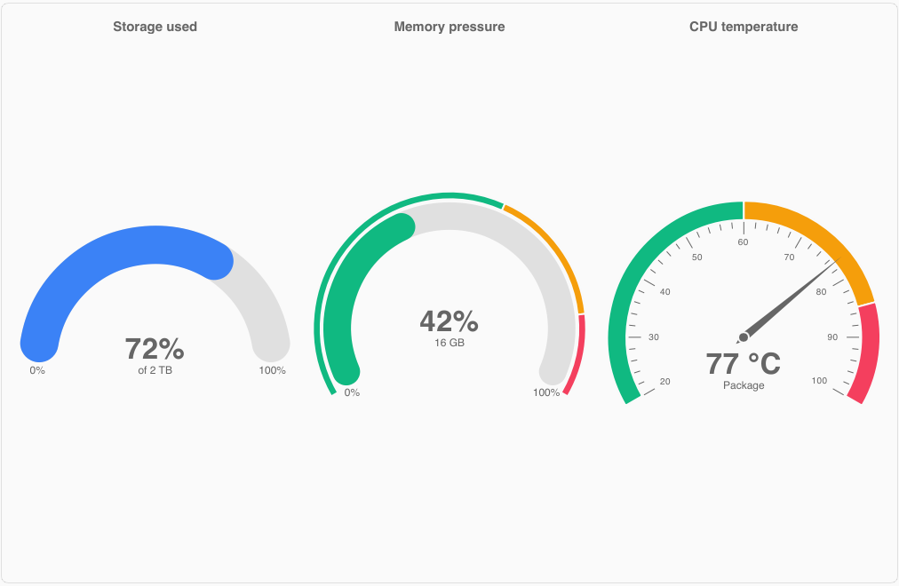
import { ChartLegendPosition, ChartTheme, GaugeChart } from "@slintplot";
GaugeChart {
title: "CPU temperature";
value: 77;
min-value: 20; // default 0
max-value: 100;
label: "Package";
bands: [
{ to: 60, label: "Normal", color: #10b981 },
{ to: 85, label: "Warm", color: #f59e0b },
{ to: 100, label: "Hot", color: transparent }, // transparent: the theme's next color
];
show-needle: true; // default false
show-ticks: true;
rounded: true; // fill style only
sweep: 240; // default 180
cutout: 0.86; // default 0.86 with a needle, else 0.72
color: ChartTheme.colors[0];
show-min-max: true; // hidden while tick labels show the ends
show-legend: true; // default false
legend-position: ChartLegendPosition.bottom;
show-tooltip: true;
animated: true;
value-font-size: 0px; // 0: sized to the gauge
value-prefix: "";
value-suffix: " °C"; // default ""
value-decimals: 0; // default -1
}| Property | Type | Default | Description |
|---|---|---|---|
value, min-value, max-value | float | 0, 0, 100 | Values outside the range are drawn at its ends |
label | string | "" | Written under the value |
bands | [ChartGaugeBand] | { to, label, color }; each band starts where the previous one ends | |
show-needle | bool | false | The needle style: the bands in full, ticks and a needle, instead of a fill |
show-ticks | bool | true | Needle style: major and minor ticks, with labels, inside the arc |
rounded | bool | true | Fill style: round ends on the track and the fill |
sweep | float | 180 | The angle the arc covers, in degrees |
cutout | float | 0.86 with a needle, else 0.72 | Size of the inside of the arc, as a share of the radius |
color | color | first theme color | The fill without bands |
show-min-max | bool | true | Write the minimum and maximum at the ends, unless tick labels show them |
show-legend, legend-position | false, bottom | A legend of the bands | |
value-font-size | length | 0px | The size of the value; 0 sizes it to the gauge |
show-tooltip, animated, title, value formatting | As for the other charts | ||
hovered-band out | int | The band under the mouse, or -1 |
Axes and formatting
Cartesian charts and HorizontalBarChart share these axis options:
- Titles:
x-titlebelow the x axis,y-titleabove the y axis. - Fixed range:
fixed-range: truewithmin-valueandmax-value, so the axis stays put when the data changes. - Logarithmic axis:
logarithmic: true, with ticks at 1, 2 and 5 times powers of ten. Values that aren't positive are left out. - Formatting:
value-prefix,value-suffixandvalue-decimals(-1 for automatic) apply to the value axis, tooltips and data labels. Pies and radar charts have them too. A minus sign goes before the prefix: "-$5".
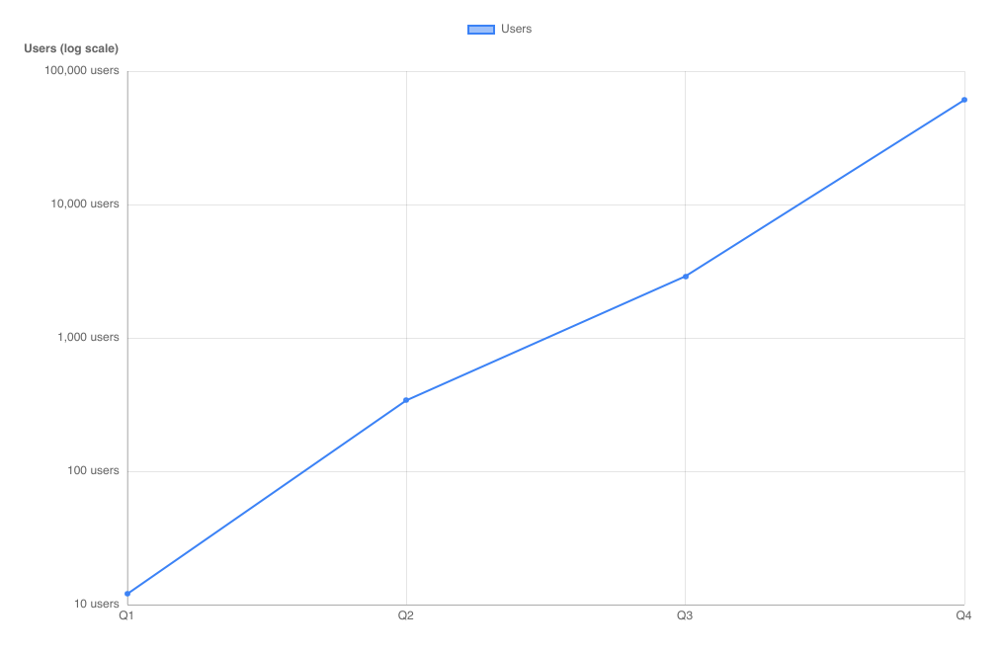
This example sets only the properties for this feature; the chart sections above list all of them.
LineChart {
labels: ["Q1", "Q2", "Q3", "Q4"];
datasets: [{ label: "Users", values: [12, 340, 2900, 61000] }];
logarithmic: true;
y-title: "Users (log scale)";
value-suffix: " users";
}Data labels
show-values: true writes each value next to its bar or point, or inside stacked segments. Pies write the value inside
each slice, or its share with show-percentages: true; slices too thin for a label get none.
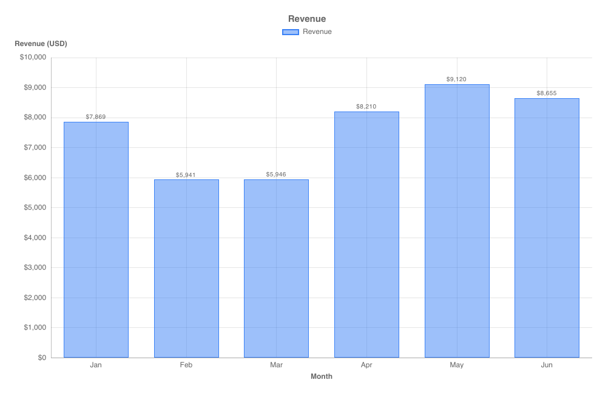
This example sets only the properties for this feature; the chart sections above list all of them.
BarChart {
labels: ["Jan", "Feb", "Mar"];
datasets: [{ label: "Revenue", values: [7869, 5941, 5946] }];
show-values: true;
value-prefix: "$";
value-decimals: 0;
x-title: "Month";
y-title: "Revenue (USD)";
}Cartesian properties
LineChart, BarChart, ScatterChart and BubbleChart share these properties.
| Property | Type | Default | Description |
|---|---|---|---|
datasets in-out | [ChartDataset] | The data; see ChartDataset | |
labels | [string] | Category labels on the x axis (not used by scatter and bubble charts) | |
title | string | "" | Shown above the chart |
begin-at-zero | bool | true for bars, else false | Include 0 in the value axis |
stacked | bool | false | Stack the datasets; lines and bars stack separately |
stacked-percent | bool | false | 100% stacked: each category split into the datasets' shares |
x-title, y-title | string | "" | Axis titles |
fixed-range, min-value, max-value | bool, float | false, 0, 100 | A fixed value axis |
logarithmic | bool | false | A logarithmic value axis |
value-prefix, value-suffix, value-decimals | string, int | "", -1 | How values are written; -1 decimals is automatic |
show-values | bool | false | Data labels on bars and points |
fill-opacity | float | ChartTheme.fill-opacity | Opacity of bar fills |
time-axis, time-origin, utc-offset, show-lines | Scatter charts: a time axis and lines between points (see TimeSeriesChart) | ||
show-legend | bool | true | |
legend-position | ChartLegendPosition | top | top, bottom, left or right |
show-tooltip | bool | true | |
animated | bool | true | Grow the data in when the chart appears, and move bars to new values |
show-points | bool | true | Line charts: a marker on every point. Turn off for large datasets. |
decimate | bool | true | Line charts and time series: min-max decimation when a line has more than twice as many points as the plot has pixels. Turn off to draw every point of large data. |
bar-radius | length | 0 | Corner radius of bars |
bar-border-width | length | 1px | Width of the solid bar outline |
zoom-enabled | bool | false | Mouse wheel zooms the x axis around the mouse, dragging pans, double-click resets |
view-start, view-end in-out | float | 0, 1 | The visible part of the x axis, as fractions of the full range |
min-view | float | 0.0005 | The smallest visible part when zooming |
zoomed out | bool | Whether the chart is zoomed in | |
hovered-index out | int | Line and bar charts: the category under the mouse or selected with the keyboard, or -1 | |
hovered-point out | ChartHit | Scatter, bubble and time series charts: the point under the mouse or selected with the keyboard; dataset is -1 when none |
Callbacks and functions
| Name | Description |
|---|---|
category-clicked(index: int) | Line and bar charts: a category was clicked |
point-clicked(dataset: int, index: int) | Scatter and bubble charts: a point was clicked |
legend-toggled(index: int) | A legend entry was clicked; the dataset's hidden flag has already been toggled |
reset-zoom() | Public function: show the whole x axis again |
Data types
ChartDataset
| Field | Type | Description |
|---|---|---|
label | string | Shown in the legend and tooltip |
values | [float] | One value per label (line, bar and radar charts) |
points | [ChartXY] | Scatter and bubble charts: the points, used instead of values |
color | color | Leave unset to use the next color of the theme |
hidden | bool | Hide the dataset; the legend toggles it |
fill | bool | Line and radar charts: fill the area |
tension | float | Line charts: curve tension, 0 for straight segments |
stepped | bool | Line charts: draw steps |
series-type | ChartSeriesType | auto (like the chart), line or bar |
ChartXY
{ x: float, y: float, r: float }. A scatter or bubble point; r is the bubble radius in pixels and is ignored by scatter charts.
ChartSlice
{ label: string, value: float, color: color, hidden: bool }. A pie, doughnut or polar area slice.
ChartTreemapItem
{ label: string, value: float, group: string, color: color }. A treemap item. Items with the same group are
placed together; leave color unset to use the group's color, or the theme's next color for items without a group.
ChartSunburstItem
{ label: string, value: float, parent: int, color: color, hidden: bool }. A sunburst item. parent is the index
of an earlier item, or -1 for the top level. Leave a parent's value at 0 to use the sum of its children, and color
unset for the theme's color (top level) or a lighter shade of the parent's.
ChartWaterfallStep
{ label: string, value: float, total: bool }. A waterfall step: a change, or with total: true, the running total so far.
ChartGaugeBand
{ to: float, label: string, color: color }. A gauge band, from where the previous one ends (or min-value) to to.
Leave color unset for the theme's next color.
ChartHit
{ dataset: int, index: int, x: float, y: float, r: float }. The point under the mouse in a scatter or bubble chart, with its position in pixels. dataset is -1 when there is none.
ChartDateTime
{ year: int, month: int, day: int, hour: int, minute: int, second: int }. A date and time in UTC, such as a
time-origin or start-date: { year: 2026, month: 10, day: 25 }.
ChartFormat
{ prefix: string, suffix: string, decimals: int }. How a value is written; decimals: -1 chooses automatically.
Charts build it from their value-prefix, value-suffix and value-decimals properties.
Enums
| Enum | Values |
|---|---|
ChartSeriesType | auto, line, bar |
ChartLegendPosition | top, bottom, left, right |
ChartPalette | modern, material, corporate, mono, pastel |
ChartKind | line, bar, scatter, bubble (used internally by the chart components) |
ChartChange | increase, decrease, total (waterfall bars, used internally) |
Theming
The ChartTheme global styles every chart. Assign its properties anywhere, for example in your window's init.
Colors follow light and dark mode automatically through Slint's Palette.color-scheme.
import { ChartPalette, ChartTheme } from "@slintplot";
export component App inherits Window {
init => {
ChartTheme.palette = ChartPalette.corporate;
ChartTheme.fill-opacity = 0.6;
// Or a custom palette:
// ChartTheme.colors = [#0b6e4f, #f4a259, #5b8e7d, #bc4b51];
}
}Palettes
Datasets and slices without their own color take the colors of the palette in order.
| Palette | Colors (light mode) | Style |
|---|---|---|
modern (default) | Clean, saturated colors in the style of modern UI frameworks | |
material | Material Design colors | |
corporate | Restrained business colors, based on Tableau 10 | |
mono | Shades of one blue; best for up to five series | |
pastel | Soft, light colors; best for up to three series |
Each palette has separate dark mode colors. Neighboring colors, and the first three, stay distinct with red-green color blindness.
ChartTheme properties
| Property | Type | Default | Description |
|---|---|---|---|
palette | ChartPalette | modern | The built-in palette |
colors | [color] | from palette | The dataset colors for the current mode; assign for a custom palette |
dark | bool | follows Palette | Dark mode |
fill-opacity | float | 0.5 | Opacity of filled marks (bars, areas, points, bubbles, polar slices); outlines stay solid |
text-color | color | gray | Axis labels, titles and legend text |
grid-color, axis-color | color | translucent | Grid lines and axis lines |
background | brush | Palette.background | Used for slice borders and label backdrops |
tooltip-background, tooltip-text | color | dark, white | |
font-size, title-font-size | length | 12px, 15px | |
line-width | length | 2px | Line chart strokes |
point-radius, point-hover-radius | length | 3px, 5px | Point markers |
slice-border-width | length | 2px | Border between pie slices, in the background color |
slice-hover-offset | length | 8px | How far a hovered pie slice moves out |
animation-duration | duration | 900ms | Entry animation |
Interaction
- Tooltips and highlights. Line, bar and radar charts show every dataset's value for the category under the mouse. Scatter and bubble charts show the nearest point, pies the slice under the mouse, and treemaps and sunbursts the item under the mouse with its share of the total. Funnels add each stage's share of the first and previous stage, waterfalls the running total, dumbbells the change between two datasets, and gauges the band under the mouse.
- Legend. Clicking an entry toggles the dataset's or slice's
hiddenflag; the axes rescale to the visible data. In a treemap, it hides or shows a group, and in a sunburst a top-level item. - Clicks.
category-clicked,point-clicked,slice-clicked,item-clicked,stage-clickedandstep-clickedreport what was clicked. Clicking a sunburst item with children zooms into it, and clicking the center zooms out. - Keyboard. Every chart can be used without a mouse. Click a chart (or tab to it) and a focus ring appears; the arrow
keys then move the highlight and tooltip, Home and End jump to the ends, and Enter clicks. Charts report their title as an accessibility label.
Chart Arrow keys Line, bar, horizontal bar Left and Right move through the categories Scatter, bubble, time series Left and Right move through a dataset's points in x order; Up and Down move to another dataset, at the point closest in x Pie, doughnut, polar area, radar Move around the slices or spokes Heatmap Move from cell to cell Calendar heatmap Left and Right move a week, Up and Down a day Treemap Move through the items, group by group and largest first Sunburst Move through the items, each parent before its children; Enter also zooms into an item with children, and Escape or Backspace zooms out Funnel, dumbbell Move through the stages or rows Waterfall Move through the steps Gauge None: a gauge shows one value, which its accessibility description reads out - Zoom and pan. With
zoom-enabled: true, the mouse wheel zooms around the mouse, dragging pans and double-clicking resets. The value axis fits the visible data.
chart := LineChart {
zoom-enabled: true;
labels: root.days;
datasets: root.measurements;
category-clicked(index) => { root.selected-day = index; }
}
Button {
text: "Show the last 10%";
clicked => { chart.view-start = 0.9; chart.view-end = 1.0; }
}Updating data from Rust
Datasets and slices are ordinary Slint models. Use a VecModel and change rows; the chart updates on its own.
use std::rc::Rc;
use slint::{Model, ModelRc, VecModel};
slint::include_modules!();
fn main() -> Result<(), slint::PlatformError> {
let app = App::new()?;
slintplot::register!(app);
let values = Rc::new(VecModel::from(vec![3.0, 7.0, 4.0]));
let datasets = Rc::new(VecModel::from(vec![ChartDataset {
label: "Sales".into(),
values: values.clone().into(),
tension: 0.4,
..Default::default()
}]));
app.set_datasets(datasets.clone().into());
// Later: append a value, or replace a row.
values.push(9.0);
if let Some(mut ds) = datasets.row_data(0) {
ds.fill = true;
datasets.set_row_data(0, ds);
}
app.run()
}Here App declares in-out property <[ChartDataset]> datasets; and passes it to a chart with
datasets <=> root.datasets;. The generated Rust types (ChartDataset, ChartXY, ChartSlice, ...)
come from slint::include_modules!().
VecModel and remove old ones. The stress example streams at 60 Hz this way.Large datasets
- Turn off point markers with
show-points: false. Each marker is an element. - Keep decimation on (
decimate: true, the default). A line with more than twice as many points as pixels is drawn as one span per pixel column, which looks the same and draws far faster: about 250 ms instead of 24 s for 3 lines of 1,000,000 points in the software renderer. - Zoom in. Values are read from the models on demand, so a zoomed-in chart reads only the visible values, and changes outside the view cause no work.
Measured with the software renderer and three datasets of 1,000,000 points each:
| Full view | Zoomed to 0.1% | |
|---|---|---|
| Layout | 170 ms | 1.4 ms |
| Frame | 230 ms | 47 ms |
| Hover | 4 ms | 4 ms |
Rust API
slintplot::library_path() -> PathBuf
The path to the library's .slint entry point, for CompilerConfiguration::with_library_paths in build.rs.
Register it under the name slintplot to import from "@slintplot".
slintplot::register!(component)
Connects the ChartEngine global of a component to SlintPlot. Call it once after creating the component.
The Chart* types generated by slint::include_modules!() must be in scope where you call it,
and the root .slint file must export { ChartEngine }.
slint::include_modules!();
let app = App::new()?;
slintplot::register!(app);slintplot::profile
| Function | Description |
|---|---|
last_layout_time() -> Duration | How long the most recent chart layout took, including reading the models |
take_totals() -> (u32, Duration) | The number of layout and axis computations, and their total time, since the previous call |
Layout modules advanced
The geometry behind the components is public, for tests, custom renderers or server-side use. These modules may change before 1.0.
| Module | Main items |
|---|---|
slintplot::layout | layout(&LayoutRequest) -> Layout, value_axis(&AxisRequest) -> Axis, Dataset, Values, DataPoint, Kind, Stacks, plotted_value, nearest_point, category_window, resolve_color, PALETTE |
slintplot::pie | layout(&PieRequest) -> PieLayout, hit(&PieLayout, x, y) |
slintplot::radar | layout(&RadarRequest) -> RadarLayout, hit(&RadarLayout, x, y) |
slintplot::time | time_ticks, format_datetime, unix_seconds, days_from_civil, civil_from_days |
slintplot::heatmap | calendar (calendar layout and quantile levels), extent |
slintplot::ticks | NiceScale (round tick spacing), Format, log_ticks, format_tick, format_value |
slintplot::path | line, area, band, steps: SVG path commands for Slint's Path |
use slintplot::ticks::{NiceScale, format_tick};
let scale = NiceScale::new(3.0, 97.0, 6);
assert_eq!((scale.min, scale.max, scale.step), (0.0, 100.0, 20.0));
let labels: Vec<String> = scale.ticks().iter().map(|&v| format_tick(v, scale.step)).collect();
// ["0", "20", "40", "60", "80", "100"]ChartEngine
ChartEngine is the Slint global that the chart components call to compute their geometry. You don't call it yourself,
but it has to be exported from your root .slint file so that register! can connect it.
Its pure callbacks include layout, value-axis, pie-layout, radar-layout, treemap-layout,
sunburst-layout, funnel-layout, waterfall-layout, dumbbell-layout, gauge-layout,
the hit tests and format-value.
Example apps
Two apps show the library in use. They are published on crates.io, so you can install them with Cargo (Rust 1.88 or later):
cargo install slintplot-gallery
cargo install slintplot-stressThen run slintplot-gallery or slintplot-stress. On Linux, Slint needs the fontconfig and xkbcommon
development packages first, such as libfontconfig-dev and libxkbcommon-dev on Debian and Ubuntu.
| Command | What it shows |
|---|---|
slintplot-gallery | A sample browser: every chart type, with Randomize, Add dataset, Add data, Remove dataset and Remove data buttons, a theme selector and dark mode |
slintplot-stress | Line, bar, time series and scatter charts with up to 8 × 1,000,000 points; waterfall, dumbbell, funnel and sunburst charts with up to 10,000 steps, rows, stages or items, and a gauge; 60 Hz streaming, zoom, decimation, themes and live performance numbers |
slintplot-gallery --snapshot <dir> | Renders every gallery sample to PNG without a window |
slintplot-stress --bench | Headless timings for 100 to 1,000,000 points |
The source of the apps is on GitHub, in examples/gallery
and examples/stress.
The gallery's ui/gallery.slint has a working example of every chart.
The gallery also runs in the browser, built with WebAssembly: slintplot.dev/demo.
Ready-built apps for macOS, Windows and Linux are on the releases page. Each download includes the licenses of the open-source crates it is built from.
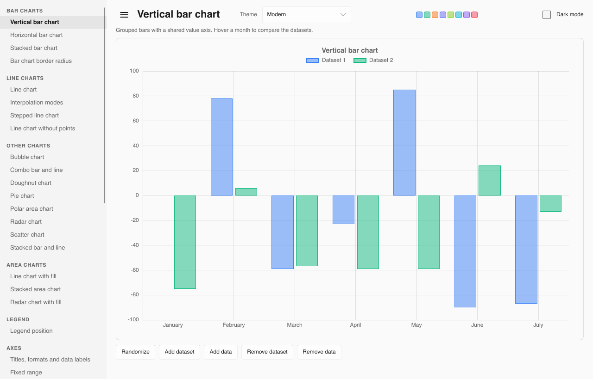
Limitations
What SlintPlot 0.1 doesn't do yet, or does with restrictions:
- Rust only. The chart geometry is computed in Rust and connected with
register!, so the library can't be used from Slint's C++, JavaScript or Python APIs. For the same reason, charts aren't drawn in Slint's live preview or SlintPad. - Platforms. Tested on desktop (macOS, Windows and Linux) and in the browser with WebAssembly, from version 0.1.2: the gallery runs in the browser. Embedded (MCU) builds are untested. With Slint's software renderer, enable its
software-renderer-pathfeature, or charts aren't drawn. - English formatting. Values use
,for thousands and.for decimals, and month and weekday names are English. There is no locale setting yet; a prefix, suffix and number of decimals can be set (see Axes and formatting). - Time zones. Time axes are in UTC, with an optional fixed offset. Named time zones and daylight saving time changes aren't supported.
- One value axis. Each chart has one value axis; there is no secondary y axis.
- Zoom, pan and decimation work in the cartesian charts only (line, bar, scatter and time series). Zoom is off by default.
- Eight colors per theme. With more than eight datasets the colors repeat. Set your own palette for more (see Theming).
- Large charts of separate shapes are slower. Sunburst, waterfall, dumbbell and funnel charts draw every item as its own shape: about 320 ms for a sunburst with 10,000 items, and about 100 ms for waterfall and dumbbell charts. With up to 1,000 items, a frame takes under 30 ms. Decimation applies to lines only.
- Label fitting is estimated. Sunburst and treemap labels are kept or hidden from an estimate of the text width, so very wide or narrow fonts can be clipped or hidden too early.
- No image or PDF export. To save a chart as PNG, render the window with Slint's software renderer, as the gallery's
--snapshotoption does. - Sunburst data order. A parent item must come before its children in
items. - Requirements. Slint 1.18 or later and Rust 1.88 or later.
License
SlintPlot is available under your choice of three licenses:
- GPLv3: free for anyone, for any purpose, under the GNU GPL, version 3. Software that includes SlintPlot and is distributed to others must be distributed under the GPLv3, with its source code.
- PolyForm Noncommercial: free for personal, hobby, research, education and other noncommercial use, with or without sharing your source code, under the PolyForm Noncommercial License 1.0.0.
- Commercial: for commercial use without the GPLv3's conditions, such as in closed-source software you sell or ship. Email license@slintplot.dev and say briefly how you plan to use the library.
LICENSE.md and COMMERCIAL.md have the details. Your application also needs a suitable Slint license.
SlintPlot is an independent project. It is not affiliated with, endorsed by or sponsored by SixtyFPS GmbH or the Slint project. Slint and the Slint logo are trademarks of SixtyFPS GmbH.
SlintPlot · slintplot.dev · license@slintplot.dev
Not affiliated with SixtyFPS GmbH or the Slint project.